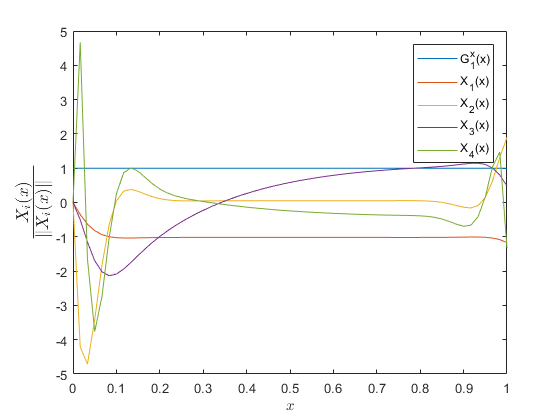
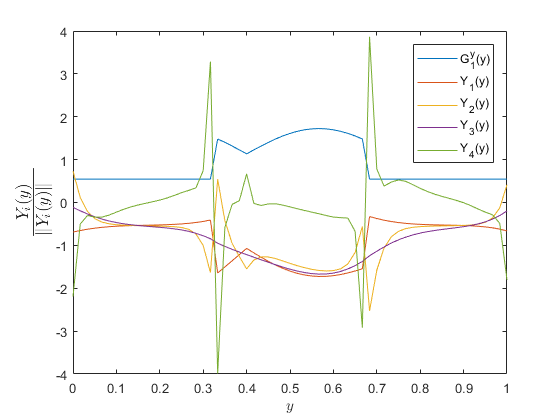
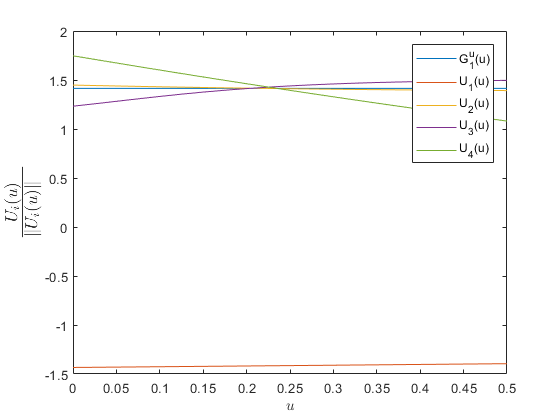
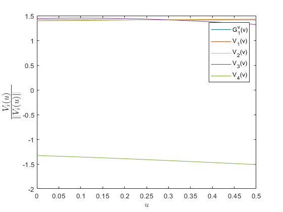
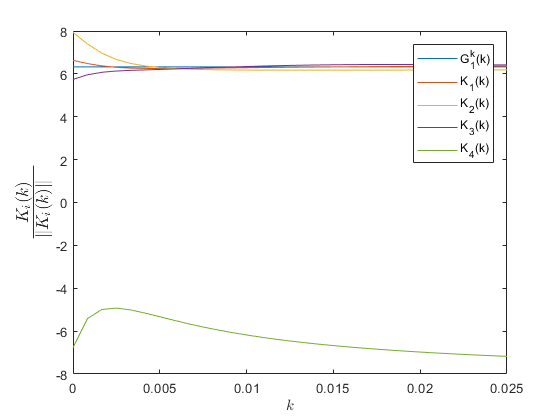

Contents
PGD CODE FOR ADVECTION-DIFFUSION EQUATION
OFFLINE PHASE This code aims to compute a PGD for the problem of advection-diffusion in a square domain with fixed Dirichlet and Neumann BC. In this approach, the x-axis velocity, y-axis velocity and diffusivity parameter are defined as extra-coordinates of the problem.
Oriol CHANDRE VILA ISAE-SUPAERO, June 2018
clear all; close all; clc; warning('off');
Initialization of the problem
% VARIABLES global num_max_iter max_fp_iter TOL TOL_TILDE ybar; TOL = 1.0E-08; % Tolerance. TOL_TILDE = 1.0E-06; % PGD enrichment tolerance. num_max_iter = 1500; % Max. # of functional pairs for the approximation. max_fp_iter = 200; % Max. # of iterations in the fixed point loop. % GEOMETRY Lx = 1; Ly = 1; Lv = 0.5; Lk = 0.025; Nx = 61; Ny = 61; Nv = 21; Nk = 31; x = linspace(0,Lx,Nx)'; y = linspace(0,Ly,Ny)'; vx = linspace(0,Lv,Nv)'; vy = linspace(0,Lv,Nv)'; k = linspace(0,Lk,Nk)'; ybar = 0.4; % DIRICHLET BC Td = zeros(Ny,1); % Temperature profile in the wall for j = 1:Ny if y(j) < (y(end)/3) || y(j) > (2*y(end)/3) Td(j,1) = 300; else Td(j,1) = 300 + 325*(sin(3*pi*abs(y(j)-ybar))+1); end end
Offline step (PGD Solution)
General purpose PGD function with residual minimization, not optimized for efficiency. Adaptation of the code presented in "The Proper Generalized Decomposition for Advanced Numerical Simulation: A primer" written by F. Chinesta, R. Keunings and A. Leygue. The author of the code is A. Leygue.
tic hx = x(2)-x(1); hy = y(2)-y(1); % x & y mesh grid size % 1D OPERATORS ALONG X & Y % Identity matrices Mx = speye(Nx); My = speye(Ny); % 1st (upwind scheme) and 2nd (centered scheme) derivatives D2x = spdiags([ones(Nx,1) -2*ones(Nx,1) ones(Nx,1)],[-1 0 1],Nx,Nx)/hx^2; D1x = spdiags([-ones(Nx,1) ones(Nx,1)],[-1 0],Nx,Nx)/hx; D2y = spdiags([ones(Ny,1) -2*ones(Ny,1) ones(Ny,1)],[-1 0 1],Ny,Ny)/hy^2; D1y = spdiags([-ones(Ny,1) ones(Ny,1)],[-1 0],Ny,Ny)/hy; % Neumann BC D1x(end,end) = 0; D1y(1,1) = 0; D1y(end,end) = 0; % IDENTITY OPERATORS ALONG U, V & K Mv = speye(Nv); Mk = speye(Nk); % SOURCE TERM IN A SEPARATED FORM (f(x,y) = 0) fx = zeros(Nx,1); fy = zeros(Nx,1); % The extra-coordinates must not affect in the problem definition! fvx = ones(Nv,1); fvy = ones(Nv,1); fk = ones(Nk,1); % PROBLEM DEFINITION IN A MATRIX OPERATOR FORM: % There will be 5 dimensions (x, y, u, v, k) solved for 2D. AA = cell(5,4); % Operator. dim2: 2 diffusion eq. and 2 advection eq. BB = cell(5,1); % RHS: in this problem is zero. GG = cell(5,1); % A priori known terms, to enforce the Dirichlet BC Dirichlet = cell(5,1); % Dirichlet BC: where to be applied. N_NT = cell(5,1); % Mass matrices. % CONSTRUCTION OF THE PROBLEM: (U*D1 - k*D2)*T = 0 % x-diffusion (-k*D2x) AA{1,1} = -D2x; AA{2,1} = My; AA{3,1} = Mv; AA{4,1} = Mv; AA{5,1} = spdiags(k,0,Nk,Nk); % y-diffusion (-k*D2y) AA{1,2} = Mx; AA{2,2} = -D2y; AA{3,2} = Mv; AA{4,2} = Mv; AA{5,2} = spdiags(k,0,Nk,Nk); % x-advection (u*D1x) AA{1,3} = D1x; AA{2,3} = My; AA{3,3} = spdiags(vx,0,Nv,Nv); AA{4,3} = Mv; AA{5,3} = Mk; % y-advection (v*D1y) AA{1,4} = Mx; AA{2,4} = D1y; AA{3,4} = Mv; AA{4,4} = spdiags(vy,0,Nv,Nv); AA{5,4} = Mk; % RHS BB{1} = [fx 0*ones(Nx,1)]; BB{2} = [fy ones(Ny,1)]; BB{3} = [fvx ones(Nv,1)]; BB{4} = [fvy ones(Nv,1)]; BB{5} = [fk ones(Nk,1)]; % GG GG{1} = ones(Nx,1); GG{2} = Td; GG{3} = ones(Nv,1); GG{4} = ones(Nv,1); GG{5} = ones(Nk,1); % Imposition of a Dirichlet BC on the whole boundary: just to remember, in % our problem, x = 1, y = 0 and y = 1 are represented by Neumann BC. The % only Dirichlet BC is located in x = 0. Dirichlet{1} = [1]; N_NT{1} = Mx; N_NT{2} = My; N_NT{3} = Mv; N_NT{4} = Mv; N_NT{5} = Mk; % PGD SOLUTION (with stabilization thanks to the upwind scheme) [FF] = PGD_SYM(AA,BB,GG,N_NT,Dirichlet); temps_Offline = toc fprintf(1,'PGD offline Process exited normally\n'); save('WorkSpacePGD_AdvDiffSteady.mat');
temps_Offline = 2.6126e+03 PGD offline Process exited normally
Graphs
figInt = 0; % NORMALIZATION OF THE COMPUTED FUNCTIONS Xnorm = bsxfun(@rdivide,FF{1},sqrt(trapz(x,FF{1}.^2))); Ynorm = bsxfun(@rdivide,FF{2},sqrt(trapz(y,FF{2}.^2))); Unorm = bsxfun(@rdivide,FF{3},sqrt(trapz(vx,FF{3}.^2))); Vnorm = bsxfun(@rdivide,FF{4},sqrt(trapz(vy,FF{4}.^2))); Knorm = bsxfun(@rdivide,FF{5},sqrt(trapz(k,FF{5}.^2))); if size(Xnorm,2) < 5 j = size(Xnorm,2); else j = 5; end % G_1^x, X_i PLOT figInt = figInt + 1; figure(figInt); set(gca,'fontsize',14); handles = plot(x,Xnorm(:,1:j)); legend(handles,[{'G_1^x(x)'} cellfun(@(in) ['X_' num2str(in) '(x)'],... num2cell(1:j-1),'uniformoutput',false)]); xlabel('$x$','interpreter','latex'); ylabel('$\frac{X_i(x)}{\|X_i(x)\| \,\,\, \,\,}$','interpreter',... 'latex','fontsize',18); % G_i^y, Y_i PLOT figInt = figInt + 1; figure(figInt); set(gca,'fontsize',14); handles = plot(y,Ynorm(:,1:j)); legend(handles,[{'G_1^y(y)'} cellfun(@(in) ['Y_' num2str(in) '(y)'],... num2cell(1:j-1),'uniformoutput',false)]); xlabel('$y$','interpreter','latex'); ylabel('$\frac{Y_i(y)}{\|Y_i(y)\| \,\,\, \,\,}$','interpreter',... 'latex','fontsize',18); % G_i^u, U_i PLOT figInt = figInt + 1; figure(figInt); set(gca,'fontsize',14); handles = plot(vx,Unorm(:,1:j)); legend(handles,[{'G_1^u(u)'} cellfun(@(in) ['U_' num2str(in) '(u)'],... num2cell(1:j-1),'uniformoutput',false)]); xlabel('$u$','interpreter','latex'); ylabel('$\frac{U_i(u)}{\|U_i(u)\| \,\,\, \,\,}$','interpreter',... 'latex','fontsize',18); % G_i^v, V_i PLOT figInt = figInt + 1; figure(figInt); set(gca,'fontsize',14); handles = plot(vy,Vnorm(:,1:j)); legend(handles,[{'G_1^v(v)'} cellfun(@(in) ['V_' num2str(in) '(v)'],... num2cell(1:j-1),'uniformoutput',false)]); xlabel('$u$','interpreter','latex'); ylabel('$\frac{V_i(u)}{\|V_i(u)\| \,\,\, \,\,}$','interpreter',... 'latex','fontsize',18); % G_i^k, K_i PLOT figInt = figInt + 1; figure(figInt); set(gca,'fontsize',14); handles = plot(k,Knorm(:,1:j)); legend(handles,[{'G_1^k(k)'} cellfun(@(in) ['K_' num2str(in) '(k)'],... num2cell(1:j-1),'uniformoutput',false)]); xlabel('$k$','interpreter','latex'); ylabel('$\frac{K_i(k)}{\|K_i(k)\| \,\,\, \,\,}$','interpreter',... 'latex','fontsize',18);    